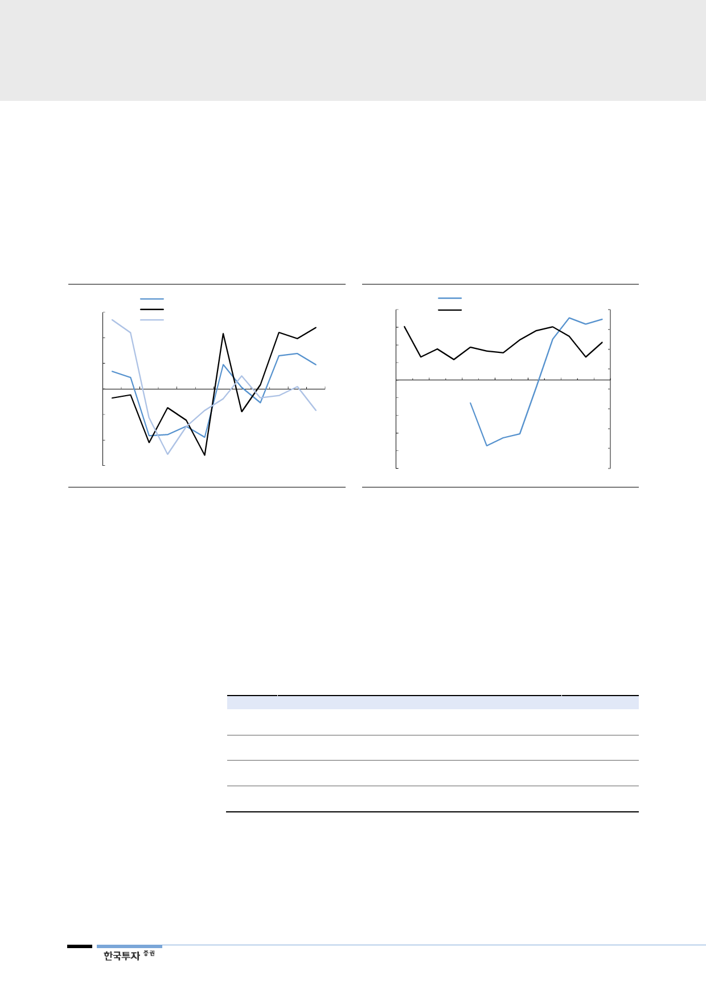

타이트한 PI필름 수급은
가격 상승 가능성을 높여
SKC코오롱PI는 2018년 1월 1일부터 PI필름 가격을 10% 인상했다. 1Q18에
는 무게당 ASP가 3% 상승했고 제한된 공급 하에서 추가적인 ASP 상승도 예상
한다. 출하량과 ASP는 무게 단위로 측정되는데 필름을 얇게 가공하는 고성능 PI
필름 비중이 높아질 경우 단위 무게당 ASP가 상승할 것으로 예상한다. 원가 측
면에서도 개선될 전망인데, 생산된 PI필름은 바로 판매되고 있고 올해 초 증가된
생산능력도 기존 장비의 효율화에 따른 것이어서 고정비 비중이 낮아지기 때문이다.
[그림 14] 해외업체향 PI필름 평균가격 높아질 전망
(%)
15
10
전체 PI필름 ASP YoY 변화율
해외향 (FPCB, 방열시트) ASP YoY 변화율
국내향 (FPCB 위주) ASP YoY 변화율
5
0
(5)
(10)
(15)
1Q16
3Q16
자료: 한국투자증권
1Q17
3Q17
1Q18 3Q18F
[그림 15] 원재료 가격 상승으로 이익률 감소 가능성 있어
(%)
40
30
20
10
0
(10)
(20)
(30)
(40)
주 원재료 가격 YoY 변화율(좌)
매출총이익률(우)
(%)
40
35
30
25
20
15
10
5
(50)
0
1Q15 3Q15 1Q16 3Q16 1Q17 3Q17 1Q18
자료: 한국투자증권
원재료 확보의 어려움은
리스크 요인
리스크는 원재료인 PMDA(Pyromellitic Dianhydride) 가격이다. PMDA는 폴리
이미드를 합성하는데 사용되는 원재료다. PMDA를 포함한 주 원재료 가격이
2017년초부터 상승했고 올해 1분기에는 전고점(2Q15) 수준까지 상승했다.
PMDA 생산업체는 소수이고 중국의 환경규제가 강화되면서 가격이 지속적으로
상승할 위험이 있다. PI필름 생산능력이 증가하면서 구입하는 PMDA의 양도 증
가하고 있는 점도 위험요소다. PI필름 출하량은 2018년 24% 증가할 전망이어서
원재료 매입량도 그만큼 증가시켜야 하기 때문이다.
<표 5> 2018년 시행된 중국 환경규제: PMDA등 유해물질 생산량을 간접적으로 제한
방법
부과방식
집행방식
실효성
격려 방식
기존 환경보호법
벌금형
(Pollution Discharge Fee, PDF)
지방정부에서 관리하고,
벌금의 10%를 중앙정부에 납부함.
지방정부는 지역경제 발전을 위해
규제를 어겼더라도 큰 제재가 없었음
벌금의 일부를 환경보호 설비의
구축을 위해 기업에 환급해주기도 함
신규 환경보호법
세금형
(Environmental Protection Tax, EPT)
중앙정부의 세율 가이드라인에 따라
지방정부가 세금을 걷음.
탈세는 중범죄로, 법적효력이 강함
중앙정부에서 직접 관리
오염 배출량이 평균보다 낮을 시
부가세를 감면하거나 면제해줌.
의미
유해물질 생산업체의
부담이 늘었음
중앙정부의 관리 강화
규제 강화
증설의 효익이 낮아짐
자료: 한국투자증권
8